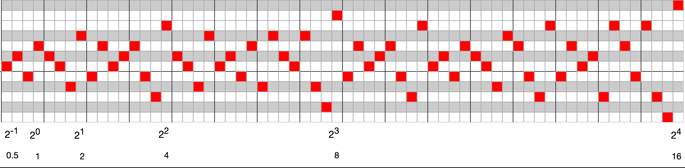

Tables & Waves
Tables & Waves is an electronic music project. This site is intended to document and demonstrate a few of the musical algorithms employed in Tables & Waves music. Presently it is a work in progress...
Infinity Series
About the Infinity Series
I learned about this number series when Lawton Hall shared a few blog posts about generative composition techniques [1] on the lines forum. If this number series piques your interest, go read his blog post about Per Nørgård's work [2] where he does a very thorough job of breaking down the algorithm. Note that he includes code for use in the SuperCollider music software.
Formally, literature about the infinity series, such as Hall's writing mentioned above or this mathematical analyis [3] is based on citations that begin with the numbers [0, 1]. In my own experiments I have found that the algorithm exhibits the same characteristics when the second number is greater than 1 (e.g., [0, 3]). Technically, the infinity series in Tables & Waves music is a modified version. It has very similar properties, but produces other music. Additionally, Tables & Waves music tends to always process basic melodic sequences such as the pure number series produced by the infinity series by applying rhythmic and sometimes even pitch transformations. Note the "Apply Rhythm" transformation available above. I encourage anyone using this algorithm to consider such transformations and the relationship between the lengths of the rhythmic sequence and the number of infinity series notes that are generated.
Basic Implementation
The best way to generate the infinity series is likely using the "binary trick" Hall mentions. However, for basic demonstration purposes, see the following prodedural code implementation in JavaScript for generating the number series as an array. This version is used to generate the infinity series in the piano roll above.
const infinitySeries = (size, seed) => {
if (size == undefined) size = 16;
if (seed == undefined) seed = 1;
let sequence = [0, seed];
let germinalIndex = 0;
while (sequence.length < size) {
germinalInterval = sequence.slice(germinalIndex, germinalIndex + 2);
germinalIntDistance = germinalInterval[1] - germinalInterval[0];
sequence = sequence.concat([
(sequence[sequence.length - 2] + (-1 * germinalIntDistance)),
(sequence[sequence.length - 1] + germinalIntDistance)
]);
germinalIndex += 1;
}
return sequence;
}
Notes
So what makes this number series musically interesting? By trying out different combinations of numbers for the initial seed and root note, which together determine the "germinal interval," the self-similarity in this sequence reveals itself. In the discussion that followed on the lines forum, I noted that when you generate a table of multiple versions of the series based on different numbers used as the starting point, the series exhibits both horizontal and vertical self-similarity (see the screenshot in that forum post).
I experience the infinity series as one of the most musically cohesive sequences I have heard. For an algorithm that has little alignment with the modal scale degrees typically associated with western tonality, it has a remarkably strong identity. Especially with a small initial seed (choose "1" for the Seed dropdown menu above), the note sequence initially sounded very strange to my ears, presumably because my western ears are not accustomed to the number of occurrences of consecutive half steps. And changing that seed/germinal interval to 2 produces whole tone melodies. However, once I listened to the sequences looping for a while and let the repetition induce a kind of familiarity, I felt I had an undertanding of its melodic contour.
What suprised me most as a listener is the way that either changing the seed or changing the root note still feels musically cohesive. I find there is only a short, if any, disruption to the melody and that it snaps back into a level of familiarity rather quickly when these transpositions happen while the sequence is playing. In other words, I hear the algorithmic contour of the sequence as a stronger identity in the infinity series than anything I tend to think of as traditional music theory constraints, such as staying in a particular key (having a stable tonic) or staying mostly within a particular scale.
The last observation to make here is a very specific mathematical property about the intervalic growth rate of the sequence. See the figure below of the first 64 notes of the infinity series as rendered on a DAW-style piano roll (just a screenshot of the piano roll above).
 Figure: Infinity Series Growth Rate by Powers of 2n
Now consider the sequence as broken up into 4-note groupings. Each group forms a measure. How do the notes in the sequence spread out over time? At what point in the sequence does it add a new maximum vertical distance on the piano roll? It turns out that these intervalic jumps are spaced out at a rate of 2n. N can be considered a growth index and 2n computes the next measure index where a new maximum interval will occur (with the first measure index being 1). In my personal perception of the melody, this property of the number series has a strong relationship to its melodic contour. Those big jumps create a musically useful kind of tension which are then followed by subsequent sub-series smaller melodic intervals. But the interplay and spacing of this tension over time is very interesting.
For those interested in why this melodic growth occurs, take a look at the Internet Archive pages Hall has dug up that for a Per Nørgård website [4].
References
- _greathorned (Lawton Hall). "Composition Toolkit Blog - Generative Techniques." lines music web forum, 24 Aug. 2020. https://llllllll.co/t/composition-toolkit-blog-generative-techniques/35657
- Hall, Lawton. "Per Nørgård's Infinity Series." Lawton Hall Music + Audio Blog, 9 Sep. 2019. https://www.lawtonhall.com/blog/2019/9/9/per-nrgrds-infinity-series
- Yu Hin (Gary) Au, Christopher Drexler-Lemire and Jeffrey Shallit. "Notes and note pairs in Nørgård's infinity series." Journal of Mathematics and Music, vol. 11, no. 1, 2017, pp. 1-19. DOI: 10.1080/17459737.2017.1299807
- Mortensen, Jørgen. "Construction by binary numbers." Five ways of constructing the infinity series... from En introduktion til komponisten og hans musik Per Nørgård. [1999]. https://web.archive.org/web/20071010092358/http://www.pernoergaard.dk/eng/strukturer/uendelig/ukonstruktion03.html